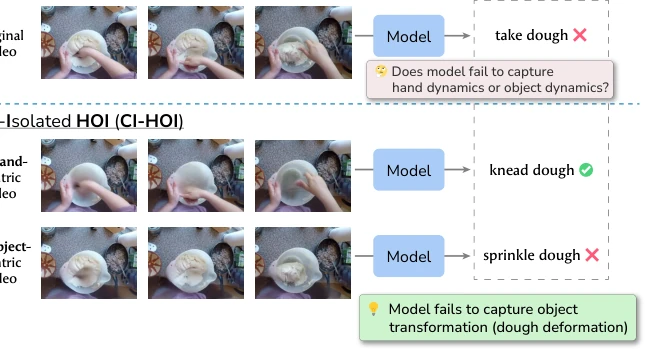
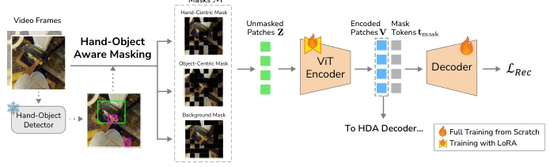
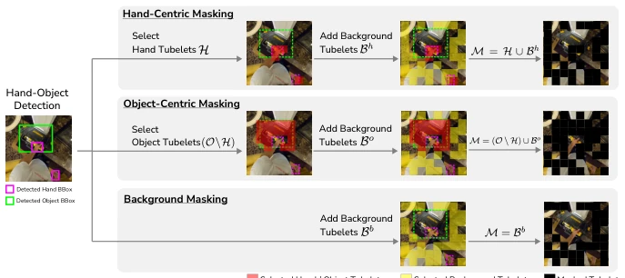
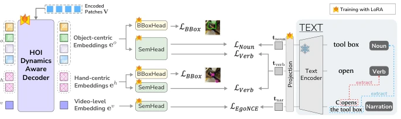
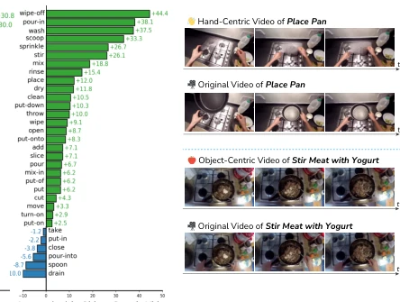
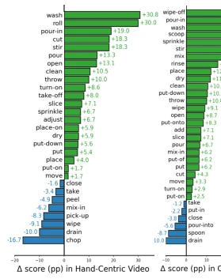
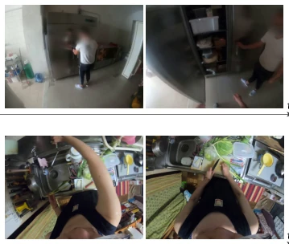
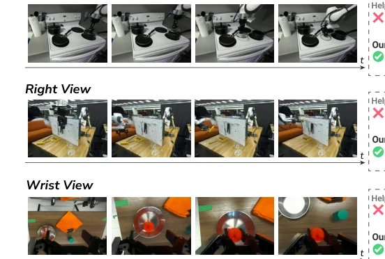

这篇论文给自恋的 Embodied AI 模型泼了盆冷水。现有的 egocentric VLM 大多在“作弊”，靠背景或静态物体位置猜动作，一旦手或物体被遮挡就傻眼。作者搞了个 CI-HOI 评估，直接把关键信息抠掉，看模型还能不能猜对，这招太狠了。虽然依赖外部检测器做掩码有点麻烦，但能证明模型真的学到了手物交互的动态，而不是死记硬背。还能泛化到机器人，这点值得点赞，毕竟人类视频和机器人视角差异巨大，说明学到的特征确实有通用性。
This paper pours cold water on narcissistic Embodied AI models. Existing egocentric VLMs are mostly 'cheating', guessing actions based on background or static object positions, and are stumped once hands or objects are occluded. The authors devised a CI-HOI evaluation, directly removing key information to see if the model can still guess correctly; this tactic is quite severe. Although relying on external detectors for masking is somewhat cumbersome, it proves the model truly learns the dynamics of hand-object interaction, rather than rote memorization. It can also generalize to robots, which is commendable, considering the significant difference between human videos and robot viewpoints, indicating the learned features are indeed generalizable.
Hand-object interaction (HOI) recognition requires capturing hand manipulation and object changes simultaneously, but existing models often take shortcuts. For instance, although EgoVLP [16] and LaViLa [38] are large-scale, they tend to rely on spurious correlations from environmental context or static appearance. Helping Hands [37] introduced an object-aware decoder, but still fails to explicitly model the independent dynamics of hands and objects. When visual cues are isolated, the performance of these models drops sharply, indicating they do not truly understand the essence of interaction. We need a paradigm that forces the model to reason from partial cues, avoiding turning 'speaking based on the picture' into 'speaking based on the background'.

Fig. 1: Cue-Isolated HOI. CI-HOI requires verb prediction representing HOI dynamics from isolated hand- or object-related observations. In this example, recognition failure can be attributed to the incorrect recognition of dough transformation.
The overall framework comprises two core modules. First is hand-object masking training, similar to VideoMAE [7], but the masking strategy is semantic-aware. Using an HOI detector to locate hands and objects, hand-center, object-center, or background masks are constructed respectively, forcing the encoder to reconstruct missing spatiotemporal tokens from the remaining visible regions. Second is the HOI Dynamic Awareness (HDA) decoder, based on the DETR architecture [1], introducing three types of learnable queries: video-level, hand-center, and object-center. The decoder is optimized through multi-task objectives, including bounding box regression (L1+GIoU), noun/verb semantic alignment (NCE Loss), and video-text EgoNCE alignment. This design forces the model to learn embeddings for hands and objects separately, then aggregate them into video-level representations, thereby explicitly capturing interaction dynamics. LoRA fine-tuning is used during training, with the mask ratio set to 50%, ensuring the model can utilize context while learning partial reasoning.

Fig. 2: Hand-object masked training. Similar to MAE, input visual patches are masked and reconstructed, while masking strategy explicitly targets hand- and object-centric regions or background regions.

Fig. 3: Hand-object masking strategy. H and O denote sets of hand and object tubelet indices, respectively. R denotes set of randomly selected tubelet indices. M denotes final set of tubelets to mask.

Fig. 4: Training HOI-dynamics-aware (HDA) decoder. Hand- and object-centric queries cross-attend to encoded visual patches to produce cue-specific embeddings, supervised by hand/object locations and semantics. The video-level embedding inter- acts with these embeddings and visual patches to encode hand-object dynamics, and is aligned with narration summarizing the overall interaction.
On the DEHOI test set, hand or object cues are isolated via inpainting to evaluate zero-shot performance. Compared to LaViLa [38] and Helping Hands [37], the model in this paper performs better on both original and isolated videos, with the smallest performance drop. On STATUS Bench [32], the state change recognition task shows significant improvement, proving effectiveness in dynamic modeling. More interestingly, zero-shot generalization is achieved on the DROID robot manipulation dataset [14], indicating the learned object-center dynamics have cross-embodied agent generalizability. Ablation studies show that the 50% mask ratio and hand-object mask balance strategy yield the best results.

Fig. 6: Qualitative results on cue- specific videos from DEHOI with re- sults on original videos. Our model cor- rectly recognizes underlying dynamics from either hand or object observa- tions, whereas existing models rely on spurious hand/object presence.

Fig. 5: Verb-wise performance improvement (degradation) of our model compared to Help- ing Hands [37] under hand-centric (left) and object-centric (right) settings. Verb classes with more than 10 samples and absolute dif- ference greater than 1% are shown.

Fig. 9: Qualitative results of State Change Identification task in STATUS Bench [32].

Fig. 10: Qualitative results of action recognition from DROID [14] videos.